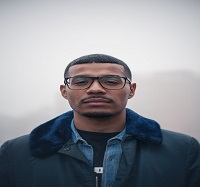

Lucas Torres
I am a photographer born, raised and based in Chicago, IL. My passion began with street photography and the unique visual opportunities it presents, but I soon found myself expanding my interests to bring my perspective to portraiture, editorial and events professionally as well as minimal and abstract photography in an artistic capacity.
When collaborating with you, I strive for unique, beautiful images presented honestly with no Photoshop fakeness. I am able to work with digital, 35mm film as well as medium format film to provide a variety of looks and aesthetics to your imagery depending on your needs. Services I offer are, but not limited to; individual and family photo sessions, event coverage, look books, blog content, weddings and engagements.